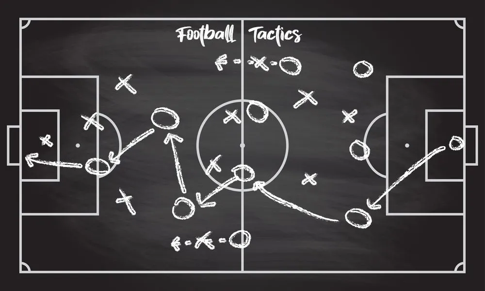
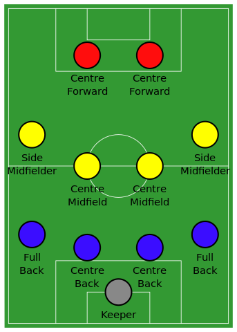
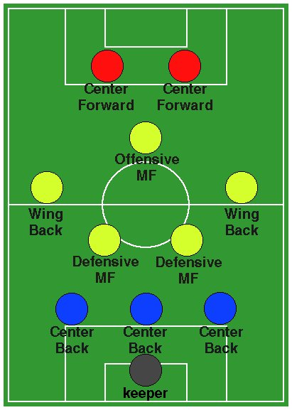

"Tactic football" หรือ "ฟุตบอลทางกลยุทธ์" เป็นแนวคิดในการเล่นฟุตบอลที่ใช้กลยุทธ์และการจัดระบบการเล่นเพื่อให้ทีมชนะในการแข่งขัน โดยมุ่งเน้นการวางแผนการเล่นที่แม่นยำและมีความสอดคล้องกับคุณลักษณะของนักเตะและทีมของตนเอง แนวคิดของฟุตบอลทางกลยุทธ์มักเน้นการควบคุมบอล การตีกลับ การเสียบอลและการวางตำแหน่งให้เหมาะสมกับแผนการเล่นของทีม โดยมีการใช้กลยุทธ์ต่าง ๆ เช่น การเล่นเซ้นต์แบ็ค, การทำประตูในการตอบโต้, การวางระบบการเล่นต่าง ๆ เป็นต้น ซึ่งการวางแผนและการปฏิบัติตามกลยุทธ์เหล่านี้ช่วยเพิ่มโอกาสในการชนะในเกมฟุตบอลได้อย่างมีประสิทธิภาพมากขึ้น การใช้ "tactic football" ช่วยให้ทีมมีประสิทธิภาพในการเล่นและสามารถควบคุมเกมได้ดีขึ้น นับว่าเป็นแนวทางที่สำคัญในการแข่งขันฟุตบอลในระดับทีมชาติและสโมสรชั้นนำทั่วโลก การนำเสนอการเล่นทางกลยุทธ์เป็นส่วนสำคัญในการสร้างความสำเร็จในวงการฟุตบอลในปัจจุบัน
วิดีโอโดย Zico Channel บน YouTube.
แผนเกมรุก (attacking strategy) คือแผนการเล่นที่ทีมฟุตบอลใช้เพื่อโจมตีและทำประตูของทีมตรงข้าม การพัฒนาแผนเกมรุกเป็นส่วนสำคัญของทีมฟุตบอลเพื่อที่จะสร้างโอกาสในการทำประตูและชนะเกม
บางคุณสมบัติของแผนเกมรุกที่มักจะถูกนำเสนอได้แก่:
1.การควบคุมบอล: การควบคุมบอลเป็นส่วนสำคัญในการตั้งแผนรุก ทีมที่สามารถควบคุมบอลได้มีโอกาสสูงที่จะสร้างโอกาสในการทำประตู
2.การเคลื่อนไหว: การเคลื่อนไหวของนักเตะที่มีเป้าหมายในการเข้าสู่พื้นที่โปรด หรือการสร้างพื้นที่เปิดให้นักเตะรับบอลมีทางเลือกมากขึ้น
3.การผ่านบอล: การผ่านบอลที่แม่นยำและรวดเร็วเป็นปัจจัยสำคัญในการทำประตู การใช้ทักษะในการผ่านบอลที่ดีสามารถทำให้ทีมเคลื่อนไหวได้เร็วและมีประสิทธิภาพ
4.การครองบอล: การครองบอลและการทำเทคนิคในการหลบหลีกจากนักเตะตรงข้ามเป็นสิ่งที่สำคัญ นักเตะที่มีความเชี่ยวชาญในการครองบอลอาจทำให้ทีมมีความยืดหยุ่นในการเล่นโจมตี
5.การสร้างโอกาส: การสร้างโอกาสในการทำประตูต้องการความคิดสร้างสรรค์และทักษะในการดำเนินบอลในพื้นที่ตรงข้าม
6.การเลือกตำแหน่งการโจมตี: การสร้างโอกาสในการทำประตูต้องการการเลือกตำแหน่งที่เหมาะสมของนักเตะในการโจมตี, เช่น การใช้นักตกประตู, นักเตะในฐานะตัวกลาง, หรือแม้กระทั่งกองหลังที่มีความสามารถในการโจมตี
การพัฒนาแผนเกมรุกต้องให้ความสำคัญกับความสมดุลและการร่วมมือของทีมทั้งหมด, การปรับตัวต่อสถานการณ์, และการใช้ทักษะของนักเตะอย่างเต็มที่
วิดีโอโดย Zico Channel บน YouTube.
แผนเกมรับหมายถึงการวางแผนยุทธวิธีที่ทีมฟุตบอลใช้เพื่อป้องกันไม่ให้ทีมตรงข้ามทำประตู ในระหว่างการเล่นรับ, ทีมจะมีการจัดระบบป้องกันเพื่อยับยั้งการโจมตีของทีมตรงข้าม นี่คือบางคุณลักษณะของแผนเกมรับ:
1.การจัดแนวรับ: ทีมรับจะมีการจัดแนวรับที่เข้มงวด, โดยมักจะมีกองหลังที่เป็นกลุ่มหนึ่งหรือสองกลุ่ม การจัดแนวรับที่ดีจะช่วยให้ทีมมีความสามารถในการป้องกันอย่างมีประสิทธิภาพ
2.การกดมีบทบาทสำคัญ: ทีมรับมักจะใช้การกดมีบทบาทสำคัญในการยับยั้งการเล่นของทีมตรงข้าม การกดมีได้ทั้งการกดแบบสูงและกดแบบต่ำ
3.การป้องกันส่วนกลาง: ทีมรับมักมีการป้องกันส่วนกลางที่แข็งแกร่ง, ทำให้ยากต่อทีมตรงข้ามในการเข้าสู่พื้นที่และสร้างโอกาส
4.การป้องกันจากการทำประตู: ทีมรับต้องมีการป้องกันที่ดีในพื้นที่ประตู เพื่อป้องกันไม่ให้ทีมตรงข้ามทำประตู นักป้องกันและผู้รักษาประตูมักมีบทบาทสำคัญในการป้องกันจากการทำประตู
5.ความยืดหยุ่น: แม้ว่าทีมรับจะเน้นการป้องกัน, แต่ยังต้องมีความยืดหยุ่นในการเปลี่ยนแปลงแผนการเล่นตามสถานการณ์ของเกม
แผนเกมรับมักจะต้องถูกปรับเปลี่ยนตามสถานการณ์ของเกมและทีมตรงข้ามเพื่อให้มีประสิทธิภาพที่สูงสุดในการป้องกัน
ในกีฬาฟุตบอล จะบ่งบอกถึงการที่ผู้เล่นในทีมจะยืนตำแหน่งใดในสนาม ซึ่งฟุตบอลเป็นเกมที่มีความยืดหยุ่นและเร็ว (ยกเว้น ผู้รักษาประตู) ผู้เล่นอาจจะปรับเปลี่ยนตำแหน่งได้ในระหว่างการแข่งขัน เช่นในรักบี้ ผู้เล่นจะไม่ยืนเป็นแถวในตำแหน่งเดิมตลอดเวลา อย่างไรก็ตาม การกำหนดตำแหน่งมีเพื่ออธิบายถึงผู้เล่นในตำแหน่งนั้นว่าจะเน้นการรุกหรือรับ หรือการเล่นในด้านใดด้านหนึ่งของสนาม
แผนการเล่นจะอธิบายด้วยตัวเลขจำนวน 3–4 ตัว (หรืออาจจะมากกว่านั้นในแผนการเล่นฟุตบอลสมัยใหม่) โดยตัวเลขจะแสดงตั้งแต่แถวของผู้เล่นในตำแหน่งเกมรับไปจนถึงเกมรุก เช่น 4–5–1 แผนการเล่นนี้จะมีกองหลัง 4 คน, กองกลาง 5 คน และ กองหน้า 1 คน โดยในแต่ละช่วงเวลาของการแข่งขันอาจจะใช้แผนการเล่นที่แตกต่างกันไปตามกลยุทธ์และสถานการณ์ของทีม
การเลือกแผนการเล่นจะเลือกโดยผู้จัดการทีมหรือหัวหน้าผู้ฝึกสอนของทีม ทักษะและวินัยของผู้เล่นเป็นสิ่งที่สำคัญในการเล่นฟุตบอลอาชีพ แผนการเล่นอาจจะถูกเลือกตามผู้เล่นที่มีอยู่ให้เหมาะสมกับตำแหน่งที่ถนัด หรือบางแผนการเล่นจะใช้เพื่อกำจัดจุดอ่อนหรือเพิ่มจุดแข็งของทีมด้วยทักษะของผู้เล่นแต่ละคน
วิดีโอโดย ตัวเทพ ฟุตบอล บน YouTube.
ระบบการเล่นฟุตบอล 4-4-2 เป็นหนึ่งในระบบที่ใช้สี่กองหลัง, สี่นักกองกลาง, และสองนักตกประตู. นี่คือลักษณะหลักของระบบการเล่น 4-4-2:
1.กองหลัง (4 คน): มีสี่นักเตะกองหลังที่แบ่งเป็นฝั่งขวา, ฝั่งซ้าย, และสองนักเตะกลาง กองหลังมีหน้าที่ป้องกันและก่อการรุนแรงในพื้นที่ป้องกัน
2.กองกลาง (4 คน): มีสี่นักเตะกองกลางที่แบ่งเป็นกองกลางระหว่าง, กองกลางด้านซ้าย, กองกลางด้านขวา, และนักกองกลางระหว่างแถว การใช้กองกลางสี่คนช่วยให้ทีมมีความสมดุลในการควบคุมบอลและการโต้กลับ
3.นักตกประตู (2 คน): มีสองนักตกประตูที่มีหน้าที่การทำประตู ซึ่งมักจะแบ่งหน้าที่อย่างชัดเจนเป็นนักตกประตูหลักและนักตกประตูรอง
4.ความยืดหยุ่น: 4-4-2 เป็นระบบที่มีความสมดุลในทั้งการป้องกันและการโจมตี มีแนวโน้มที่สามารถปรับเปลี่ยนรูปแบบการเล่นได้ตามสถานการณ์ของเกม
5.ข้อดีและข้อเสีย: ระบบนี้มีความเข้าใจง่ายและมักให้ความมั่นคง. มีการสนับสนุนจากกองกลางทั้งสี่คนทำให้ทีมสามารถควบคุมบอลได้ดี อย่างไรก็ตาม, 4-4-2 อาจขาดความยืดหยุ่นในการปรับตัวต่อสถานการณ์ต่าง ๆ และอาจต้องการนักเตะที่มีความพร้อมทั้งในการโจมตีและป้องกัน
การเล่น 4-4-2 ต้องการความเข้าใจและความสามารถของนักเตะทั้งหมด, และการทำงานร่วมกันอย่างเป็นทีมเพื่อสร้างความสมดุลในทุกส่วนของสนาม

วิดีโอโดย พรานหงส์ channel บน YouTube.
ระบบการเล่นฟุตบอล 3-5-2 เป็นหนึ่งในระบบที่ใช้สามลูกบอลกองหลัง ห้ากองกลาง และสองนักตกประตู ซึ่งมีลักษณะที่แตกต่างจากระบบอื่น ๆ ที่มีจำนวนกองหลังน้อยกว่า หรือมีแนวตั้งหรือแนวนอนเพิ่มเติมในส่วนของกองกลาง. นี่คือลักษณะหลักของระบบการเล่น 3-5-2:
1.กองหลัง (3 คน): มีสามนักเตะกองหลังที่เป็นหลักของการป้องกัน สามนักเตะเหล่านี้มักจะเป็นนักเตะที่มีความแข็งแกร่งและสามารถใช้ทักษะการตัดบอลได้ดี
2.กองกลาง (5 คน): มีห้านักเตะกองกลางที่แบ่งเป็นกองกลางระหว่าง, กองกลางด้านซ้าย, กองกลางด้านขวา, และนักกองกลางระหว่างแถว การใช้กองกลางหลายคนช่วยให้ทีมมีความสามารถในการควบคุมบอลและการเล่นสายตายได้ดี
3.นักตกประตู (2 คน): มีสองนักตกประตูที่มีหน้าที่การทำประตู และมีความยืดหยุ่นในการเคลื่อนไหวระหว่างการตีประตู
4.ความยืดหยุ่น: ระบบ 3-5-2 มีความยืดหยุ่นที่ดีในการปรับเปลี่ยนรูปแบบการเล่น สามารถเปลี่ยนเป็น 5-3-2 ในกรณีที่ต้องการเสริมแนวป้องกันหรือเปลี่ยนเป็น 3-4-3 ในกรณีที่ต้องการเพิ่มพลังโจมตี.
5.ข้อดีและข้อเสีย: ระบบนี้มีความสามารถในการควบคุมบอลและเล่นสายตาย, แต่ในบางกรณีอาจทำให้โค้ชต้องการนักเตะที่มีความแข็งแกร่งและสามารถทำหน้าที่ทั้งในการป้องกันและการโจมตีได้
การเล่น 3-5-2 ต้องการความเข้าใจทั้งทางทักษะและทางทีมของนักเตะทั้งหมด, และการปรับตัวต่อสถานการณ์ต่าง ๆ ในเกม.

การเปลี่ยนแผนระหว่างการเล่นของฟุตบอลมีหลายวิธีและกลยุทธ์ที่ทีมฟุตบอลสามารถนำมาใช้ตามสถานการณ์และเป้าหมายที่ต้องการ ต่อไปนี้คือบางวิธีที่ทีมฟุตบอลสามารถใช้เพื่อเปลี่ยนแผนระหว่างเกม:
1.การเปลี่ยนตำแหน่งผู้เล่น: ทีมสามารถทำการเปลี่ยนตำแหน่งของผู้เล่นในสนามเพื่อเพิ่มความเข้มแข็งหรือสร้างโอกาสในส่วนที่ต้องการ ยกตัวอย่างเช่น, การเปลี่ยนผู้รุมเป้าเป็นตำแหน่งที่ตั้งเพื่อสร้างการโจมตีที่แตกต่าง.
2.การเปลี่ยนระบบการเล่น: ทีมสามารถเปลี่ยนระบบการเล่น, เช่น การเปลี่ยนจากระบบ 4-4-2 เป็น 3-5-2 หรือ 4-3-3 เพื่อปรับการควบคุมที่กำลังเกิดขึ้นในสนาม
3.การเปลี่ยนกลยุทธ์: ทีมสามารถเปลี่ยนกลยุทธ์การเล่น, เช่น การเปลี่ยนจากการโจมตีต่อสู้ไปเป็นการป้องกันแนวหลัง, หรือการเพิ่มความสูงในการโจมตีโดยการให้ทีมใช้บุกมากขึ้น
4.การเปลี่ยนผู้เล่นเข้า-ออก: ทีมสามารถทำการเปลี่ยนผู้เล่นที่อยู่ในสนามเพื่อเพิ่มพลังโจมตีหรือป้องกัน, หรือเพื่อการรักษาสภาพร่างกายของผู้เล่นที่มีบาดเจ็บหรือเหนื่อย
การเปลี่ยนแผนระหว่างการเล่นเป็นกลยุทธ์ที่สำคัญในฟุตบอลเพื่อปรับตัวต่อสถานการณ์ในสนามและทำให้ทีมมีประสิทธิภาพมากที่สุด การตัดสินใจในการเปลี่ยนแผนต้องพิจารณาถึงความสามารถของผู้เล่น, ความแข็งแกร่งของทีมตรงข้าม, และเป้าหมายของทีมในเกมนั้น ๆ
เมื่อทีมกำลังถูกนำอยู่ อาจจะทำการเปลี่ยนผู้เล่นกองหลังหรือกองกลางออก แล้วเปลี่ยนกองหน้าลงมาเล่นแทน เช่น เปลี่ยนจาก 4–5–1 เป็น 4–4–2, 3–5–2 เป็น 3–4–3 หรือ 5–3–2 เป็น 4–3–3
เมื่อทีมกำลังนำอยู่หรือต้องการที่จะป้องกันประตู ผู้จัดการทีมอาจจะเลือกที่จะเปลี่ยนผู้เล่นในเกมรับด้วยการเปลี่ยนกองหน้าออก หรือเพิ่มตำแหน่งในกองกลาง เพื่อเพิ่มประสิทธิภาพในการคุมพื้นที่ เช่น เปลี่ยนจาก 4–4–2 เป็น 5–3–2, 3–5–2 เป็น 4–5–1 หรือ 4–4–2 เป็น 5–4–1 แผนการเล่นของทีมอาจจะไม่ใช่แผนการเล่นจริงในสนาม เช่น ทีมที่ใช้แผนการเล่น 4–3–3 สามารถเปลี่ยนเป็น 4–5–1 ได้อย่างรวดเร็วหากผู้จัดการทีมต้องการผู้เล่นไปช่วยในเกมรับมากขึ้น